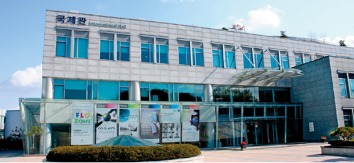

2024 LSK Winter Conference
Conference Venue
성균관대학교 국제관

정문에서 학회장소까지 오시는 길
Directions
Subway
- Take Subway Line 4 to Hyehwa Station (Stn#123)
- Go out Exit 1 and take the Green bus 종로07, 종로 08
- Get off at Sungkyunkwan Univ. Back Gate(종로07),
600 Memorial(종로08)
Trains (KTX)
To get to Seoul Station,
take Line 4 at Hyehwa station
[Seoul Station] (서울역)
- Trains to Daejeon, Daegu, Busan, Incheon int'l airport